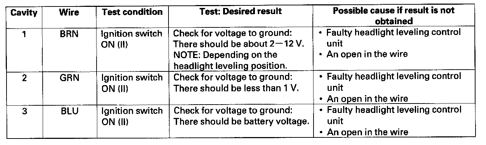

Headlight Leveling Motor Input Test
Headlight Leveling Motor Input Test1. Turn the ignition switch OFF.
2. Disconnect the 3P connector (A) from the headlight leveling motor (B).
3. Inspect the connector and socket terminals to be sure they are all making good contact.
- If the terminals are bent, loose or corroded, repair them as necessary, and recheck the system.
- If the terminals are OK, go to step 4.

4. Reconnect the connector to the headlight leveling motor, and make these input tests at the connector.
- If any tests indicate a problem, find and correct the cause, then recheck the system.
- If all the input tests prove OK, replace the headlight leveling motor.